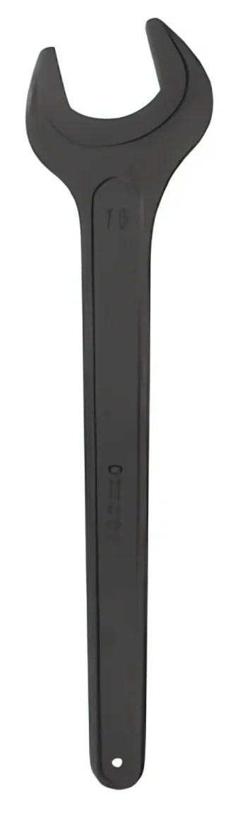

GROZ · Spanners & Wrenches
Single Open End Wrench
CAT NR SOEW/38 · ORD NR 34431
| CAT NR (catalogue number) | SOEW/38 |
|---|---|
| ORD NR (order number) | 34431 |
| Box quantity | 20 |
| Length (L) (inches) | 12-3/4 |
| Length (L) (mm) | 324 |
| Shank thickness (mm) | 7.6 |
Ask for a quote The catalogue PDF, page 199
“Ask for a quote” opens this product in the catalogue: add it to your quote and send it. Buyers from Africa, the Gulf and worldwide are welcome; prices in USD, EUR or INR.
From the GROZ Workshop Tools CB-05 catalogue. Not yet verified: these details were read from the printed catalogue automatically; check the catalogue page before ordering.